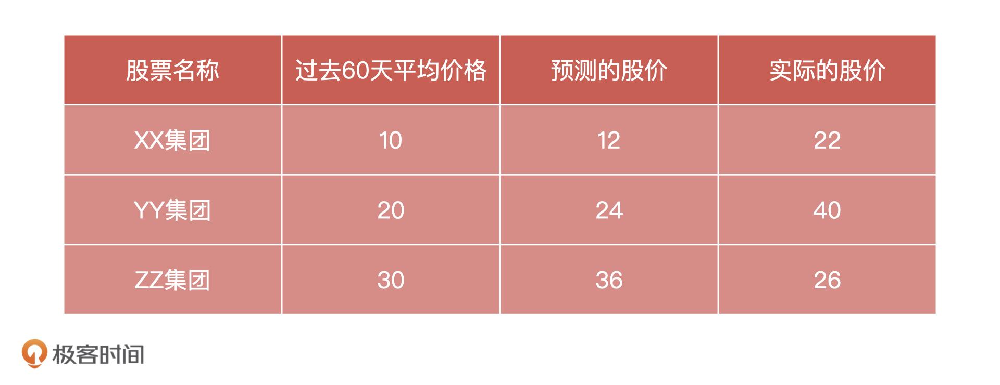
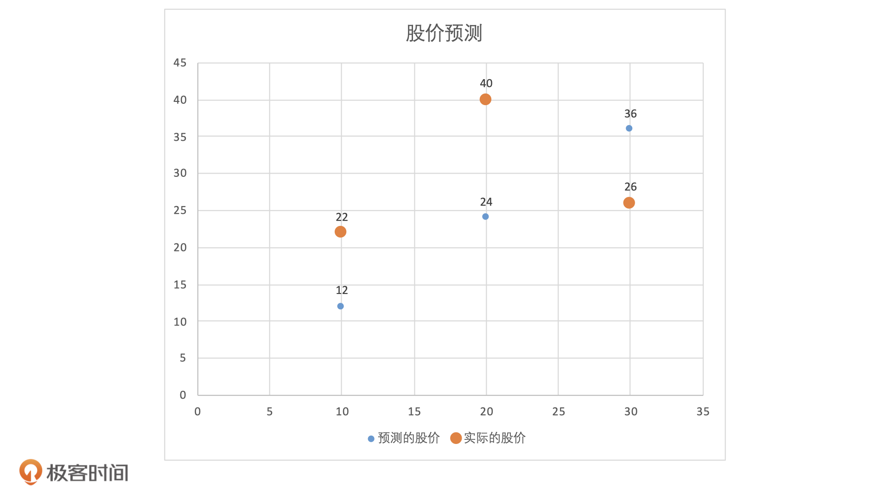

- 00 开篇词 你好，产品经理！你的未来价值壁垒在哪儿？.md
- 01 行业视角：产品经理眼中的人工智能.md
- 02 个人视角：成为AI产品经理，要先搞定这两个问题.md
- 03 技术视角：AI产品经理需要懂的技术全景图.md
- 04 过来人讲：成为AI产品经理的两条路径.md
- 05 通过一个 AI 产品的落地，掌握产品经理工作全流程.md
- 06 AI 模型的构建过程是怎样的？（上）.md
- 07 AI模型的构建过程是怎样的（下）.md
- 08 算法全景图：AI产品经理必须要懂的算法有哪些？.md
- 09 K近邻算法：机器学习入门必学算法.md
- 10 线性回归：教你预测，投放多少广告带来的收益最大.md
- 11 逻辑回归：如何预测用户是否会购买商品？.md
- 12 朴素贝叶斯：让AI告诉你，航班延误险该不该买？.md
- 13 决策树与随机森林：如何预测用户会不会违约？.md
- 14 支持向量机：怎么预测股票市场的涨与跌？.md
- 15 K-means 聚类算法：如何挖掘高价值用户？.md
- 16 深度学习：当今最火的机器学习技术，你一定要知道.md
- 17 模型评估：从一个失控的项目看优秀的产品经理如何评估AI模型？.md
- 18 核心技能：产品经理评估模型需要关注哪些指标？.md
- 19 模型性能评估（一）：从信用评分产品看什么是混淆矩阵？.md
- 20 模型性能评估（二）：从信用评分产品看什么是KS、AUC？.md
- 21 模型性能评估（三）：从股价预测产品看回归算法常用的评估指标.md
- 22 模型稳定性评估：如何用PSI来评估信用评分产品的稳定性？.md
- 23 模型监控：产品经理如何建设算法模型监控指标体系？.md
- 24 推荐类产品（一）：推荐系统产品经理的工作职责与必备技能.md
- 25 推荐类产品（二）：从0打造电商个性化推荐系统产品.md
- 26 预测类产品（一）：用户复购意向预测的底层逻辑是什么？.md
- 27 预测类产品（二）：从0打造一款预测用户复购意向的产品.md
- 28 预测类产品（三）：从0打造一款“大白信用评分产品”.md
- 29 自然语言处理产品：从0打造一款智能客服产品.md
- 30 AI产品经理，你该如何提升自己的价值？.md
- 31 AI产品经理面试，这些问题你必须会答！.md
- 春节加餐1 用户增长模型：怎么利用AI技术判断新渠道性价比？.md
- 春节加餐2 一次答疑，带你回顾模型评估的所有基础概念.md
- 期中周测试题 ，你做对了吗？.md
- 期中答疑 AI产品经理热门问题答疑合集.md
- 结束语 唯一不变的，就是变化本身！.md
21 模型性能评估（三）：从股价预测产品看回归算法常用的评估指标
你好，我是海丰。
股票价格预测模型或者说算法不仅是金融界一项重要的研究课题，也往往和我们的直接经济利益相关，因此一直备受关注。
为了能够准确预测股票未来的价格，很多公司和机构不断尝试开发了很多股票价格预测的模型。但是，对于用算法来进行股票价格的预测这件事情，市场上有两种不同的声音：有的人认为算法是可以预测股票的，并且用 LSTM 算法进行了很多验证；有的人认为股票走势是随机游走的，不论用什么模型预测结果都不可能准确。
不过，这节课，我可不打算和你深入讨论股票预测是否可以用算法实现。我们只会对股票预测模型的结果进行评估，让你知道回归模型的性能评估该用什么指标，以及具体怎么做。
回归算法的评估和分类算法的评估在底层逻辑上是一致的，都是为了找到真实标签和预测值之间的差异。只是对于分类算法来说，我们关注的是预测分类和实际分类是否相同，而对于回归算法来说，我们关注的是模型是否预测到了正确的数值。 比如，我们预测一只股票 10 天后的价格是 10 元，在对模型进行评估的时候，你只要看 10 天后的价格和预测价格是否一致就可以了，如果不一致，再看差异有多大。
在回归算法中，常见的性能评估指标主要有 4 个，分别是 MSE（Mean Squared Error，均方误差）、RMSE（Root-mean-squared Error，均方根误差）、MAE（Mean Absolute Error，平均绝对误差 ） 和 \(R^2\)（R Squared 决定系数）。
下面，我们就借助一个预测股票的产品，来详细说说它们的原理、计算方法，以及它们是怎么对模型进行性能评估的。
如何计算MSE、RMSE、MAE？
对于预测未来某一天的股票价格来说，我们能想到的最简单的方法，就是用过去一段时间它的平均价格进行预测。
假设，我们用过去 60 天的股票均价来预测这只股票第2天的价格。比如说，我们就用 y=1.5*x这个最简单的算法模型进行预测，那 x 就是过去 60 天的均价，y 是我们预测的第二天的股价。这里我要补充说明一点，因为模型预测第2天的价格比预测第20天的价格更简单，为了方便理解，我们就用第2天举例了。
那怎么验证模型的准确性呢？我们选择3只股票，记录下它们过去60天的均价，以及模型预测的股价，等到第2天股票价格出来之后，我们再把这些信息和实际的股价放在一个表格中进行对比，如下图：

为了表示它们之间的关系，我们建立一个坐标系，以过去 60 天股票均价作为X轴，以股票价格作为y轴。当我们把这三组数据放入坐标系后，每一个X会同时对应一个预测股价和一个实际股价，它们关系如下图所示：

这也就是说，模型每一次预测之后，我们都会得到一个真实值和预测值之间的误差，也就是同一个X值的情况下，蓝色点和橘色点之间的差值。那么，是不是我们把得到的是所有误差相加就可以知道这个模型预测准确情况了？
这个问题你可以先自己想一想。下面，我们直接动手来计算一下。根据刚才得到的数据，我们可以直接计算出这三只股票预测值和实际值之间的差值，分别 \(22-12=10\)，\(40-24=16\) 和 \(26-36=-10\)。
这个时候，如果我们直接把这三次的误差相加，正误差和负误差就会相互抵消。为了避免正负抵消的问题，我们会对每次得到的误差求平方再相加，三次测试的误差平方和就是： \((22-12)^{2}+(40-24)^{2}+(26-36)^{2}= 456\)。
但是直接用这个数据也是不合理的。因为我们发现，只要测试样本少，即使模型的性能不是非常好，这个数值也不会太大。而且，随着样本的不断增加，即使模型的性能比较好，预测也很准确，这个数值也一定会越来越大。这对测试样本多的模型来说就非常不公平了，那我们该怎么办呢？
这个问题很好解决，我们可以求出所有测试差值的平方和，再让它除以测试样本的数量，公式为：\(\\frac{(22-12)^{2}+(40-24)^{2}+(26-36)^{2}}{3}= 152\)。
这就是我们用来表示当前模型性能的一个评估指标——MSE，它的公式如下：
\[- MSE=\\frac{1}{n} \\sum\_{i=1}^{n}\\left(y\_{i}-\\hat{y}\_{i}\\right)^{2}- \]
其中，\(n\) 代表测试样本数量，\(y\_i\) 代表实际值，\(\\hat{y}\_{i}\)代表预测值。简单来说，这个指标的计算过程就是先求出所有样本真实值和预测值的差值平方，再除以样本数量。
根据这个公式的逻辑，我们可以知道，MSE一定是一个大于等于 0，并且无穷大的数值。在对模型进行评估的时候，这个值应该是越小越好。
但是这里还有一个问题，我们在对差值取平方的时候，经常会导致差值的量纲发生变化。比如说，差值的单位是米，那我们对差值取平方，就会导致差值的量纲变成平方米。因此，为了保证量纲相同，我们可以在MSE的基础上，再对它求一个平方根。这其实就是RMSE，它的计算公式是：\(RMSE = \\sqrt{MSE}\)。
我们知道，对差值求平方是MSE为了防止正负差异抵消而进行的操作。事实上，要想保证每个样本的差值都是正数，除了求平方之外，我们还可以求每个差值的绝对值。这就是MAE了，它和MSE一样，也可以用来测量预测误差，它的公式如下：
\[- MAE=\\frac{1}{n} \\sum\_{i=1}^{n}\\left|y\_{i}-\\hat{y}\_{i}\\right|- \]
那么，在实际工作中，这三个指标我们该如何选择呢？总的来说，算法工程师看得更多的是MSE，因为MSE对差值取了平方，有一个数据放大的过程，更容易发现误差。但是在实际效果评估时候，我们更多地使用MAE，相对MSE来说MAE更接近真实误差。
除此之外，RMSE因为经过了平方再开方的过程，会导致误差在一定程度上被放大，所以RMSE和MAE的虽然量纲相同，但是同一个模型的RMSE会比MAE要大一些。因此，如果你希望更清楚地知道模型差异就选择RMSE，如果你想了解更真实的模型误差就选择MAE。
如何计算 \(R^2\)？
刚才这 3 个指标的范围都是 0 到正无穷，它们的数值越小代表模型效果越好。但是，当我们想要用一个模型来预测不同场景问题的时候，就会存在不同的预测场景有不同的取值范围。比如，预测股票价格的取值范围就是从几元到几百元；预测房价的取值范围就是几十万到几千万元，而预测身高就又变成了 1 到 2 米左右的数值，可读性非常差。
我们想到，分类算法评估标准的准确率都是0~1 之间的概率值，非常直观，那么回归模型有没有这样的衡量标准呢？这个时候，我们就可以用 \(R^2\)来进行评估。
\(R^2\)的计算公式是为\(R^{2} = \\frac{(TSS - RSS)}{TSS}\)。其中，TSS 代表总离差平方和，RSS 代表残差平方和。从公式来看，它的分子是模型的预测误差，分母是平均数，所以它的值一般都在0-1的范围内，并且它越靠近1，说明模型预测得越准确。
那么 \(R^2\)具体怎么计算呢？接下来，我就借助刚才股票预测的数据，来试着计算一下。

在这个例子中，TSS 就等于每个样本点实际值和实际值均值之间的差值平方和，RSS 就等于每个样本点实际值和预测值之间的差值平方和。具体的计算过程可以分成 4 步：
- 求出实际值的均值：\(\\frac{22+40+26}{3} = 29.3\)
- 求出每个实际值和实际值均值之间的差值平方和 TSS：\(TSS = （22-29.3）^{2}+（40-29.3）^{2}+（26-29.3）^{2}\)
- 求出每个实际值和预测值之间的差值平方和 \(RSS：RSS = （22-12）^{2}+（40-24）^{2}+（26-36）^{2}\)
- 把 TSS 和 RSS 带入 \(R^2\) 公式：\(R^{2} = \\frac{(TSS - RSS)}{TSS}\)
小结
这节课，我们讲了回归模型中4个非常重要的评估指标。
均方误差 MSE，它的应用最广泛，用来判断预测值和实际值之间误差的指标。它的范围是0到正无穷，数值越小代表模型性能越好。
均方根误差 RMSE，它是由MSE 开根号得到的，也是用来判断预测值和实际值之间误差的指标。它的范围也是0到正无穷，数值越小代表模型性能越好。
平均绝对误差 MAE，它的计算过程和 MSE 类似，但是它不对差值求平方，而是直接取绝对值。同样的，它的数值越小代表模型性能越好。
决定系数 \(R^2\)，它是实际结果与模型构建的预测值之间的相关系数的平方，决定系数值越高，代表模型效果越好，它的范围一般为0到1。
在使用这几个指标的时候，我们可以参考这 3 点：
- MAE相对于MSE来说更接近真实误差，所以在评估模型性能的时候，我们会优先选择MAE；
- 想要更清楚地知道模型误差就选择MSE，想要知道更真实的模型误差就选择MAE；
- 当我们想要用一个模型来解决不同问题的时候，选择\(R^2\)可以横向比较这个模型在哪个问题上表现更好。
思考题：
我们今天说了， \(R^2\)的范围一般是0到1，但也可能是负值。那你觉得在哪些情况下， \(R^2\)会是负值？为什么呢？
期待在留言区看到你的思考和答案，我们下节课见！
© 2019 - 2023 Liangliang Lee. Powered by gin and hexo-theme-book.